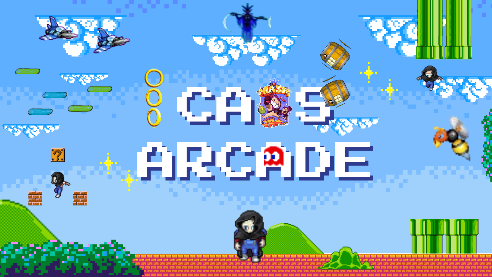

I'm an italian 13th grade computer science student and aspiring programmer with a passion for problem solving, learning, and building. I enjoy experimenting with different technologies and creating a wide variety of projects—both independently and as part of a team. Lately, my main interests revolve around game development, backend development and cybersecurity, especially software security, after reaching the finals of the 2025 edition of CyberChallenge.IT, which also brought my passion for CTF competitions. Here you can see my tech stack and top projects.

Lightweight 2D game development framework written in C++20 using OpenGL 3.3. Designed to make building simple 2D games and applications easier and more straight-forward.

An intuitive Windows 10/11 tool that simplifies PC setup and performance tuning with just a few clicks, streamlining system configuration for both casual and power users.

A cellular automata simulator written in C++ with raylib and OpenMP. It provides users a simple interface to run various cellular automata on a 2D grid of cells.

A simple and intuitive project management tool that helps you organize your work efficiently. Its backend is built with C++ and PostgreSQL as database, while the frontend, a simple and easy to use CLI app, is built with C++ and ftxui.

Caos Arcade is a videogame developed for the 2025 Phaser Game Jam (4th place out of 26 teams). The theme was Chaos and the videogame revolves around the idea of the gaming world being discombobulated by a deity of chaos, Nixaroth.

A lightweight, self-hostable URL shortener with a C++ htmx-based backend and SQLite database. Features Docker support for easy deployment, making it ideal for personal use or small-scale link management solutions.